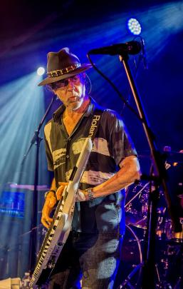

Manfred Mann's Earth Band is an English rock band formed by South African musician Manfred Mann. Their hits include covers of Bruce Springsteen's "For You", "Blinded by the Light" and "Spirit in the Night". After forming in 1971 and with a short hiatus in the late 1980s/early 1990s, the Earth Band continues to perform and tour.

Discography of Manfred Mann's Earth Band
| Album |
Year |
| Manfred Mann's Earth Band |
1972 |
| Glorified Magnified |
1972 |
| Messin' |
1973 |
| Solar Fire |
1973 |
| The Good Earth |
1974 |
| Nightingales & Bombers |
1975 |
| The Roaring Silence |
1976 |
| Watch |
1978 |
| Angel Station |
1979 |
| Chance |
1980 |
| Somewhere in Afrika |
1983 |
| Criminal Tango |
1986 |
| Masque |
1987 |
| Soft Vengeance |
1996 |
| 2006 |
2004 |
Blinded By The Light
Manfred Mann's Earth Band
Blinded by the light
Revved up like a deuce
Another runner in the night
Blinded by the light
Madman drummer bummers
Indians in the summer
With a teenage diplomat
In the dumps with the mumps
As the adolescent pumps
His way into his hat
With a boulder on my shoulder
Feeling kinda older
I tripped a merry-go-round
With this very unpleasing
Sneezing and wheezing
The calliope crashed to the ground
The calliope crashed to the ground
But she was blinded by the light
Revved up like a deuce
Another runner in the night
Blinded by the light
Revved up like a deuce
Another runner in the night
Blinded by the light
Revved up like a deuce
Another runner in the night
Some silicone sister
With her manager mister
Told me I got what it takes
She said, I'll turn you on sonny to something strong
Play the song with the funky break
And go-kart Mozart
Was checking out the weather chart
To see if it was safe outside
And little Early Pearly
Came by in his curly-wurly
And asked me if I needed a ride
Asked me if I needed a ride
'Cause she was blinded by the light
Revved up like a deuce
Another runner in the night
Blinded by the light
She got down but she never got tight
She's gonna make it to the night
She's gonna make it through the night
But mama, that's where the fun is
But mama, that's where the fun is
Mama always told me not to look into the eyes of the sun
But mama, that's where the fun is
Some brimstone baritone
Anticyclone rolling stone
Preacher from the east
Says, "Dethrone the Dictaphone
Hit it in its funny bone
That's where they expect it least."
And some new mown chaperone
Was standing in the corner
Watching the young girls dance
And some fresh-sown moonstone
Was messing with his frozen zone
Reminding him of romance
The calliope crashed to the ground
But she was blinded by the light
Revved up like a deuce
Another runner in the night
Blinded by the light
Revved up like a deuce
Another runner in the night
(Madman drummers bummers and Indians in the summer with a teenage diplomat
In the dumps with the mumps as the adolescent pumps his way into his hat)
Blinded by the light
Revved up like a deuce
Another runner in the night
Blinded by the light
Revved up like a deuce
Another runner in the night
(With a boulder on my shoulder feelin' kinda older I tripped the merry-go-round
With this very unpleasing sneezing and wheezing the calliope crashed to the ground)
Blinded by the light
Revved up like a deuce
Another runner in the night
Blinded by the light
Revved up like a deuce
Another runner in the night
(And now Scott with a slingshot finally found a tender spot and throws his lover in the sand
And some bloodshot forget-me-not whispers daddy's within earshot save the buckshot turn up the band.)
Blinded by the light
Revved up like a deuce
Another runner in the night
Blinded by the light
Revved up like a deuce
Another runner in the night
(Some silicone sister with her manager mister told me I got what it takes
She said I'll turn you on sonny to something strong)
She got down but she never got tired
She's gonna make it through the night